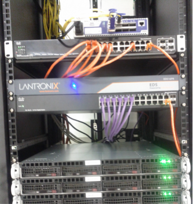

8.5. Networking¶
Telescope Control Systems span a large dynamic range in bandwidth and latency requirements. Most systems have fairly relaxed requirements on bandwidth and latency, e.g., the telescope main axis require few parameters to update at nominally 20 Hz, which is easily handled by off-the-shelf Ethernet components. A few other systems such as wavefront control and Adaptive Optics run at kHz regime, shuffling orders of magnitude larger data volume in real time to read out telemetry and WFS, computing wavefront slopes, commanding ASMs, etc.
The global trend in High Performance Computing and Ethernet communications drives rapid developments in the industry, somewhat comparable to CPUs (Moore’s law) seen in the previous decade. The emphasis on inter-connected cloud computing, and the ever-growing bandwidth and low latency requirements, continue to drive the technology today. Recent trends from high performance computing community, coupled with cost-benefit components, point to Infiniband* as a safe choice in the present and for future growth.
8.5.1. Control Network¶
The GMT control network design is based on an Ethernet switched-fabric topology that eliminates the existence of single point failures. The control network is the backbone that communicates with any subsystem of the Telescope. It connects the control room, the electronics room (where most of the computers are located), and all field interface modules installed on the telescope structure. The network is deployed using optical fiber trunk cables between the telescope enclosure base and the facility building. The Supervisory Hierarchy Figure and Figure 10-26 (TBC) illustrate the conceptual design of the control network.
Networking equipment evolves rapidly, thus it is advisable to wait as close as possible to the deployment phase for final procurement. In this early stage of the project a Gigabit Ethernet network is used to prototype the communication system. This prototype will evolve during the life of the project to track technology evolution and to optimize the final network design.
Requirement
|
Statement
|
|---|---|
Communication Standards
|
SWCS shall define a set of physical communication protocols
to integrate its different components.
|
Communication Protocols
|
SWCS shall define a set of software protocols and APIs that
allow the communication with the required performance
between different components.
|
Network Access
|
Support telescope operation, the specified operating modes
and data transfer rates as required.
|
General Network
|
Provide a low latency and control network.
|
Storage Network
|
Provide a high bandwidth storage network.
|
Ultra-Low Latency Bus
|
Provide ultra-low latency, high bandwidth communication bus.
|
8.5.2. Ultra-Low Latency Network¶
A low latency, high bandwidth, and scalable, communication backbone is a prerequisite for the design of a modular adaptive and active wavefront control system. For this purpose, a 40 Gbps Infiniband network has been tested in the lab. The tests include a combination of high bandwidth middleware, Infiniband uverbs, MPI† (Message Passing Interface) and RDMA‡ (Remote Direct Memory Access) on a mini-cluster setup. Preliminary results show that existing ultra-low latency, off-the-shelf, communication products provide the required performance out of the box.
Infiniband support was originally provided by the OpenFabrics Enterprise Distribution. Now the support has been merged into the upstream Linux kernel. User-space support packages (e.g., subnet manager and performance tools) are made available through regular distribution channels. Infiniband implements the following key features:
- Kernel bypass – Removes the need for context switches between kernel and user-space.
- RDMA enabled – Application can post commands directly to the host adapter eliminating expensive calls and associated (latency) overheads of going through an OS stack.
- Zero copy – Eliminates buffering and allows direct access on remote servers, significantly reducing latency.
8.5.3. Benchmark Tests¶
A test environment was deployed consisting three hosts interconnected with an 8-port 40 Gb/s switch, using the following components:
- Mellanox ConnectX-2 Single 4x QSFP 40Gb/s ($562.00/unit)
- Mellanox Infiniscale IV QDR 8-port switch ($1,750.00)
The set-up is shown in the Figure below. On the left the entire computer cabinet can be seen including the Mellanox switch on top and the Linux machines at the bottom. A close-up on the Mellanox switch is depicted on the right.
|  |  |
{kind=link}
Measured latency (typical and worst-case) as a function of the payload size in bytes is shown in the Figure below. This benchmark used Reliable Connection single queued pairs. As advertised, the typical latency for data write, send, and read is 1-2 μs for payloads <256 bytes, increasing to ~8 μs for payloads of ~16 kB, such as an ASM command vector.

Fig. 8.9 Measured Latency vs. Payload
Another benchmark test was run, this time for latency jitter using again Reliable Connection single queued pairs. As shown in the Figure below, for small message sizes (2 bytes), <0.1% of messages have a latency exceeding 3 μs. Both tests were run under a mainstream Linux kernel, RT_PREEMPT and RTAI, giving similar numbers independently of the platform.

Fig. 8.10 Latency Distribution
The evaluation of Infiniband shows that the technology can be easily deployed at relatively low cost. The performance measured agrees with the vendor advertised capabilities without the need for specific or complex tuning. While the verb API is very specific to RDMA, it is well documented, and most of the complexity stems from connection management, which can be leveraged using helper libraries (rdma_cm or other out-of-band mechanism).
The technology is already widely deployed and mainstream in the high performance computing community. Driven by community needs, process improvement is under active development and there is every expectation that new products will improve substantially in performance in near future.